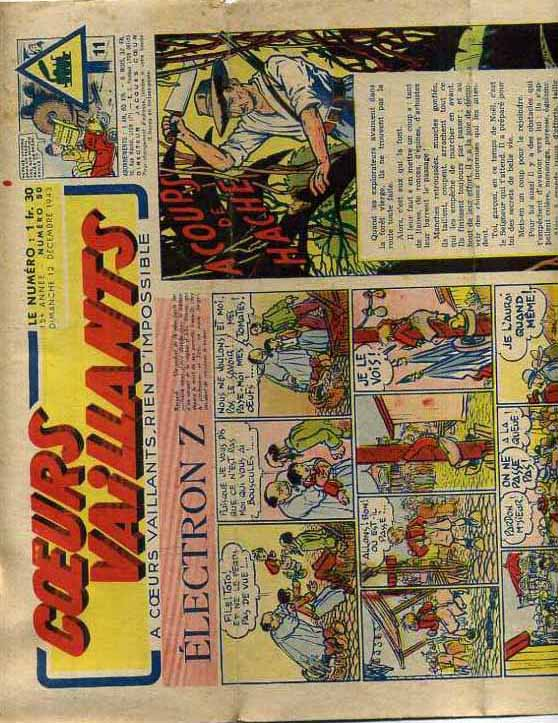
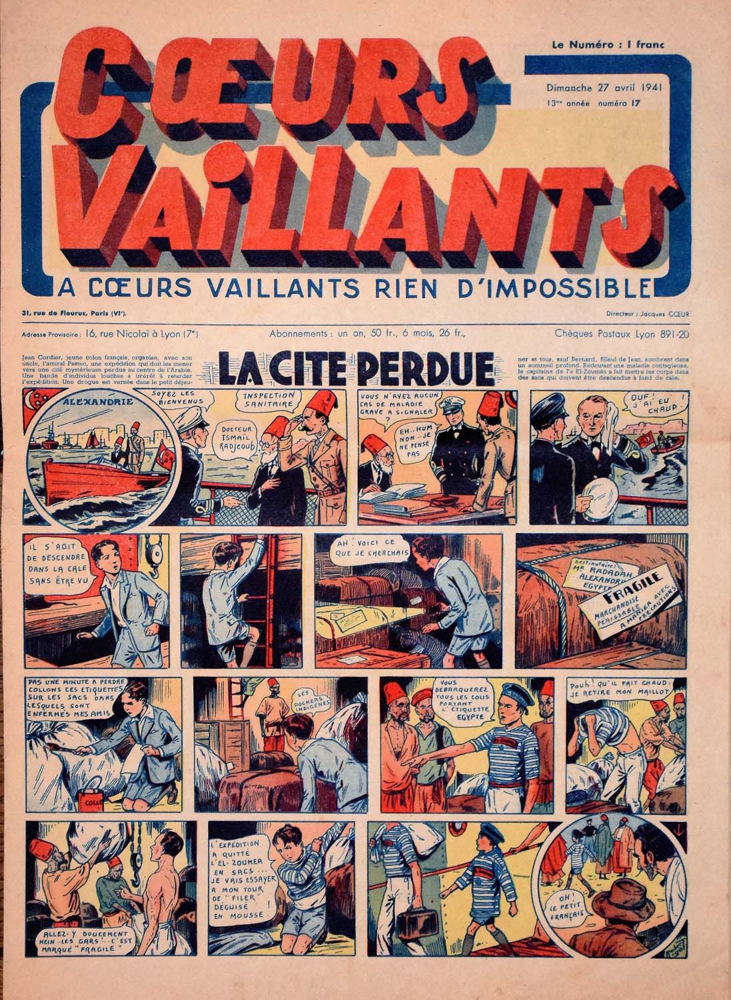
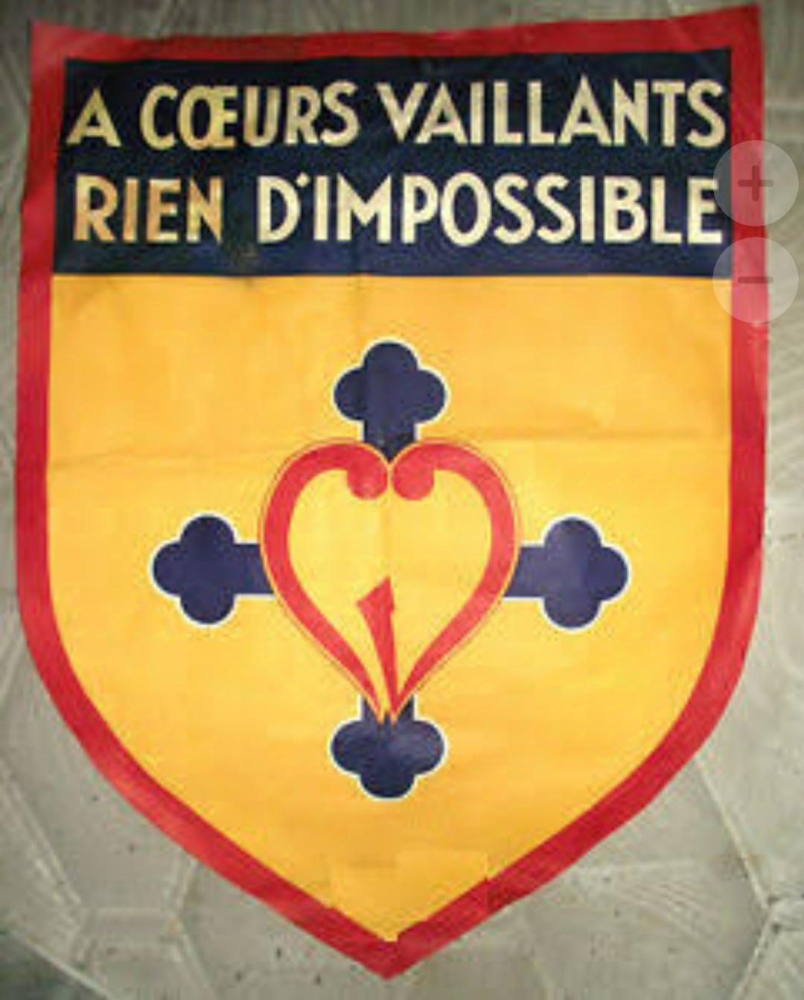
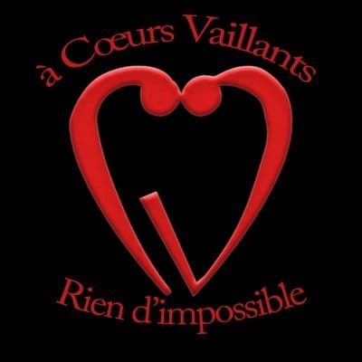
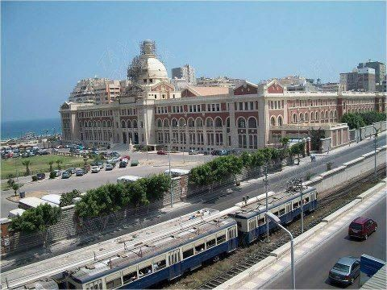

IN FRANCE :
IN FRANCE BEFORE 70 YEARS AGO THERE WAS A LOT OF PROBLEMS IN FRANCE AND THIS TIME IS WHEN MARVEL AND AVENGERS AND COMICS AT ALL HAVE BEEN WRITING TO GIVE FAITH TO PEOPLE MEAN WHILE OUR MAIN CHARACTER GASTON COURTOIS WAS A RICH MAN HE WANTED TO MAKE PEOPLE LEARN AND BEING EDUCATED.
BUT BECAUSE HE WASN'T POOR HIS RICH FAMILLY DIDN'T LIKE HIM TO BE WITH POOR PEOPLES OR HOMLESS OR ETC IN THIS TYPE . TO TELL POORS TO THAT THEY SHOULD LEARN THAT WAS THE MOST FATAL TROUBLE IN HIS WAY
PEOPLES LOVED MARVELS IDEAS CUZ IT WAS THE FAITH ON THEIR LIFE CUZ THEY WERE IN HARD TIMES AND IGNORANCE TIME TOO .
AFTER THAT OUR MAIN CHARACTER GASTON COURTOIS DECIDED TO TAKE THE CHANCE AND TELL THEM THAT THEY CAN BE HEROS LIKE MARVELS AND AVENGERS AND CHANGE THEIR LIFE TO SUCH BETTER ONE AND THIS IS NOT HARD .
MAYBE THE 1ST QUESTION CAME INTO YOUR MIND IS HOW WE WILL BE HEROS .HE TELLS THEM EVERYDAY GUIDE IN CHARITÉ AND HOW TO BE PERFECT .
+BY WRITING . THEY WROTE A LOT OF COMICS ABOUT HOW TO BE THE BEST OR ABOUT HOW TO READ OR LEARN MORE THINGS AND BY THE PROFIT THEY DONATE AND MAKE A LOT OF GOOD THINGS TO HELP ALL PEOPLES
HERE WE START THE REAL PRESENTATION :
MARVEL COMICS:

MARVEL COMICS WAS SO AFFECTIVE AND DIFFERENT THAN THE OTHER ARTS . MARTIN GOODMAN WAS THE 1ST COMPANY OWNER AND AFTER THAT THEY CREATED MARVEL STUDIO FOR FILMS BUT IN OUR STORY MARVEL HAD A LOT OF FANS BECAUSE IT WAS FAITHFULL AND THAT'S MADE IT REMARKABLE AND UNIQUE .(CREATED IN 1939)
WHILE SPEAKING ABOUT PÉRE GASTON COURTOIS :
WHY WE R SAYING PÈRE ?
THAT'S BECAUSE HE ADDICTED HIS LIFE IN RELIGION AND TEACHING PEOPLE ABOUT RELIGION (HOMME DE L'ÉGLISE) .
WHAT'S HIS GOAL
HE WANTED TO MAKE OUR WORLD BETTER AND BETTER SO HE TOOK THE CHANCE AND TOLD PEOPLE : "U CAN BE HERO" TO MAKE THEM LEARN MORE .
MAGAZIN :
 THE CV TURNED INTO A MAGAZIN ACTIVITY .THAT WAS THE MOST SIMPLE WAY TO MAKE THEM TAKE ACTIONS AND LEARN HOW TO READ AND WRITE .IN THIS BOOKS THERE WERE A LOT OF SIMILLAR THINGS BETWEEN OUR CV MOVEMENT IN 1927 .
OUR CV MOUVEMTNT START POINT :
 IN 1936 CV HAVE STARTED TO BE AS A MOVEMENT OR ACTIVITY AND GETTING BIGGER AND BIGGER IT WAS FOR EVERYONE DOESN'T MATTER THE RELIGION OR ANYTHING ELSE AS CV GET INTO OTHER COUNTRIES . AS THEY MAKE OUR PYRAMID OF ORDER TO ESCAPE FROM PROBLEMS AND MAKE IT SUCH BETTER .
IN 1940 :
OUR GENERATION STARTS IN EGYPT 1940 FOR THE 1ST TIME IN ALEXANDRIA IN SAINT MARC COLLÉGE .